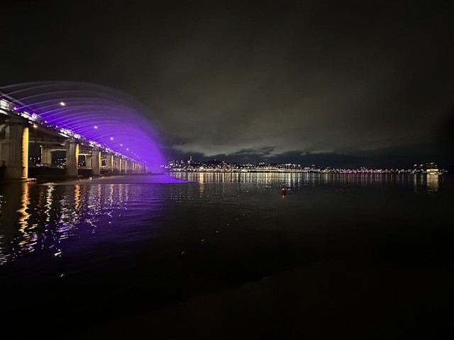
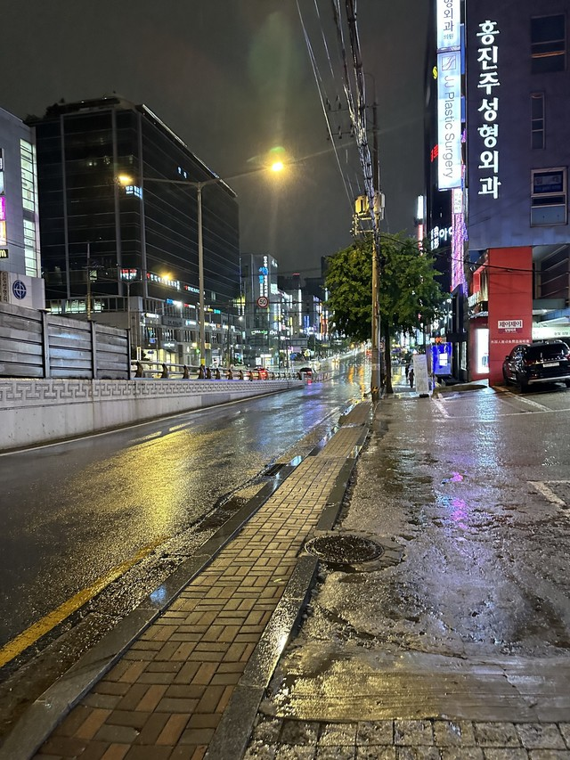
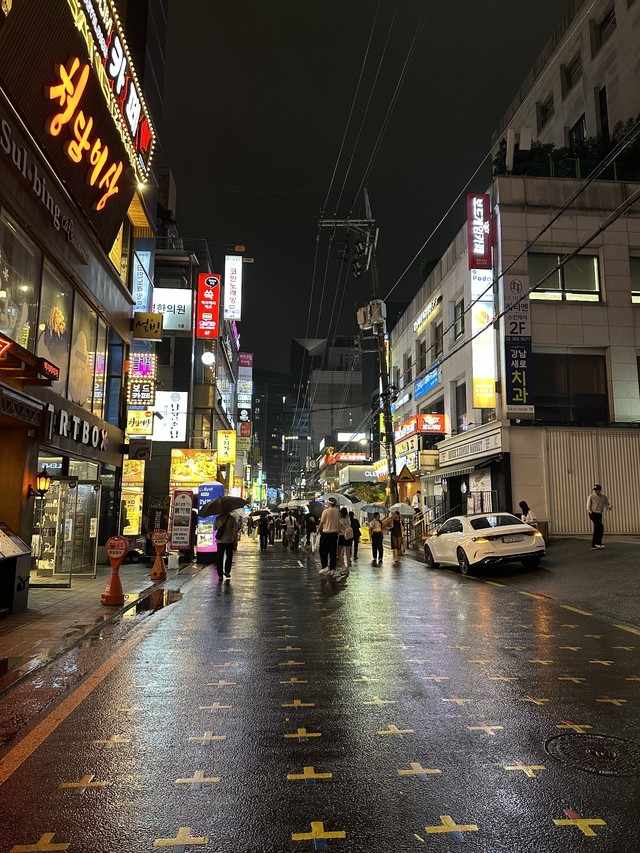

Visiting Korea
Staying with Family
I visit South Korea during the summer. All of my extended family lives there, so these trips give me a chance to spend time with relatives I do not get to see during the school year.
I usually stay with my grandparents on my mom's side near Siheung Sageori. I also spend some time with my dad's side of the family in Gangnam. Staying with my grandparents is a familiar part of each visit.
Meeting Friends
I enjoy seeing my Korean friends when I return. Korea is also a meeting place for friends who live in different parts of the United States. Even though we live far apart during the year, our visits sometimes bring us together in the same place.
Food and Exploring Seoul
Food is one of my favorite parts of visiting Korea. I enjoy eating with family and friends, and exploring different parts of Seoul gives us more places to try.
I like walking around the city and seeing different neighborhoods. My photos show some of the places I have seen at night, from a bridge over the river to streets filled with restaurants and shops.



Trips with My Grandparents
My visits are not limited to Seoul. I have gone on trips with my grandparents to Jeju and other parts of Korea. These trips give us more time together and let me explore places outside the neighborhoods where my family lives.
What I enjoy most about Korea is being able to see family and friends while also exploring. Each visit includes familiar places, but there are still different parts of Seoul and the rest of Korea to see.